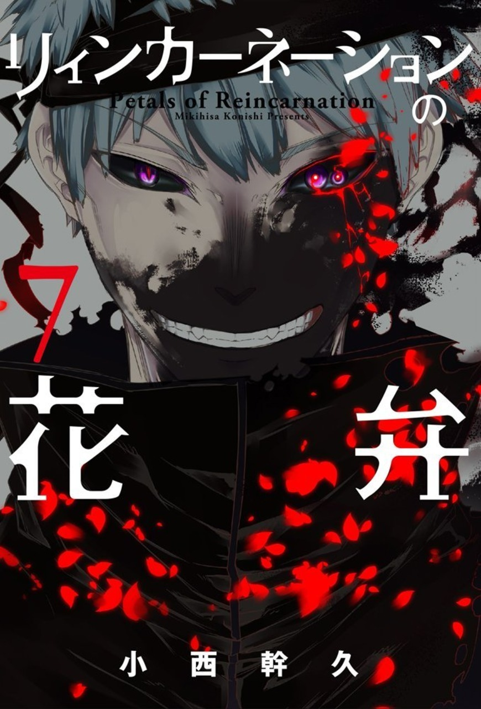

Sinners
La Reencarnación es algo que le ocurre a todos los humanos por igual, eso por definición incluye a las personas que cometieron todo tipo de males en sus vidas pasadas. Dictadores, terroristas, asesinos, violadores... mientras sigan siendo humanos, tendrán la oportunidad de regresar para volver a cometer sus crimenes. Cada Reencarnado está atado a su Talento, por lo que los Pecadores sienten el impulso de cometer las atrocidades que hicieron en su vida pasada. Es debido a esta naturaleza tan peligrosa que se tiene como alta prioridad el eliminarlos.
Aunque no se pueden considerar una organización como tal, todos estos pecadores fueron reunidos por Kouu, uno de los Reencarnados originales que fundó el Bosque de los Grandes, pero que desertó al ver que el Bosque tenía la intención de eliminar a quienes consideraba sus compañeros en pos de salvar a la humanidad. La visión de Kouu siempre fue el libre albedrío, dejar que los Reencarndos hagan lo que quieran con esta segunda vida, aún si eso implica que los pecadores amenacen con la Paz Mundial. Habiéndole declarado la guerra al Bosque de los Grandes, los Pecadores dejarán salir a la luz los Talentos que tanto les han obligado a reprimir.
Kouu tiene el Talento de un Pecador. Ha viajado por todo el mundo y visto Reencarnados de todo tipo, por lo que sabía mejor que nadie la amenaza que suponían los pecadores para las personas, pero no podía simplemente matarlos, eso iba en contra de sus creencias sobre la libertad, es por eso que se le ocurrió un plan. El motivo por el que le declaró la guerra al Bosque de los Grandes era una excusa para que todos sus compañeros murieran por igual. Si todos se matan entre sí en un entorno donde serán capaces de desplegar sus Talentos al máximo sin pensar en las consecuencias, entonces podrían estar finalmente satisfechos, y la amenaza de los Pecadores se desvanecería.
Quizás fue demasiado inocente creyendo que un plan como este funcionaría, pero ninguno de sus compañeros se echó para atrás. Todos en el fondo sabían que eran peligrosos, siguen siendo humanos, y por eso aceptaron este destino con una sonrisa. Kouu solo quería darles una muerte digna.
Miembros

Kouu
El Rey de los Reencarnados. Uno de los fundadores del Bosque de los Grandes y el actual "líder" del ejército de los Pecadores. Kouu deseaba que los Reencarnados tuviesen libre albedrío y crecieran en una sociedad donde todos pudieran coexistir, Da Vinci quería un mundo donde pudiesen apoyar a la humanidad, lo que implicaba la muerte de algunos Reencarnados, esto ocasionó que ambos separaran sus caminos y Kouu se volviese el principal obstáculo para el Bosque.
Se dice que él es el Reencarnado más poderoso.
Talento
Omnireceptáculo
Al cubrir cualquier objeto con su aura negra puede controlarlo y utilizarlo como arma. No sería exagerado decir que podría controlar todo el Planeta si lo cubre con su aura. Para poder emplear su Talento primero tiene que dañar a alguien.
Posee una técnica llamada "Armonía de la Muerte Negra" donde controla toda la materia a nivel molecular en un área determinada, comprimiéndola y reduciéndola a átomos. Él lo describe como un Big Bang en miniatura.